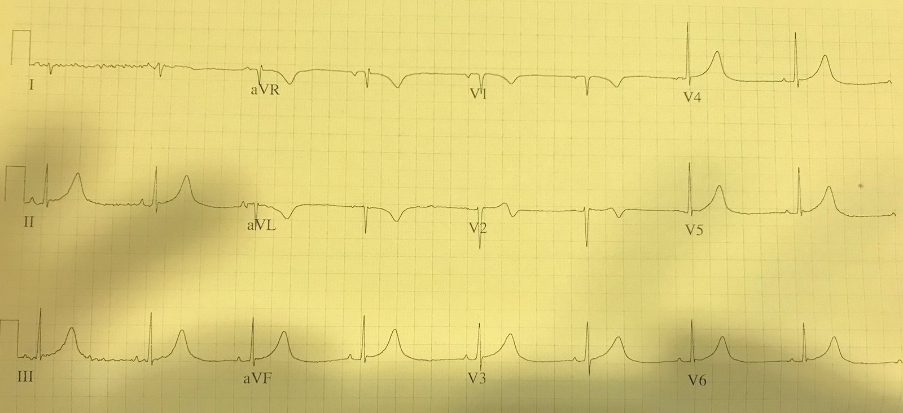
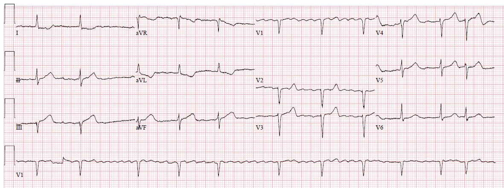
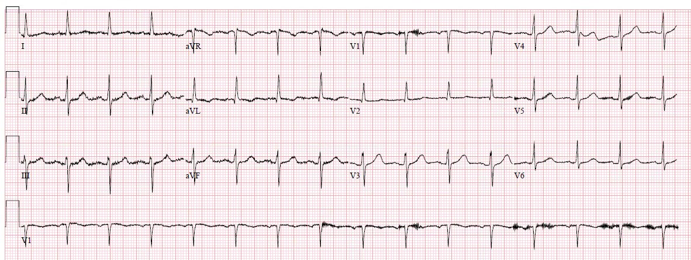
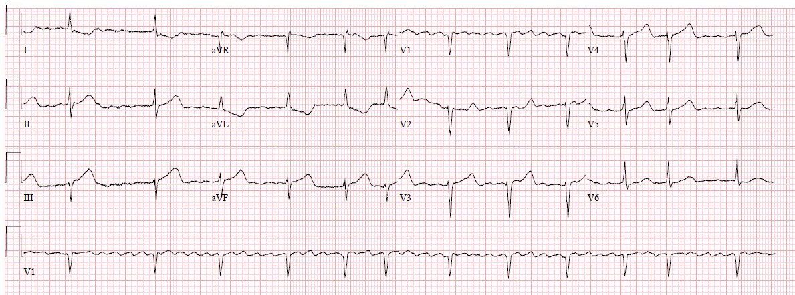
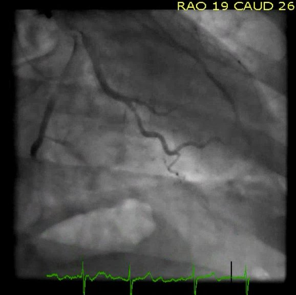
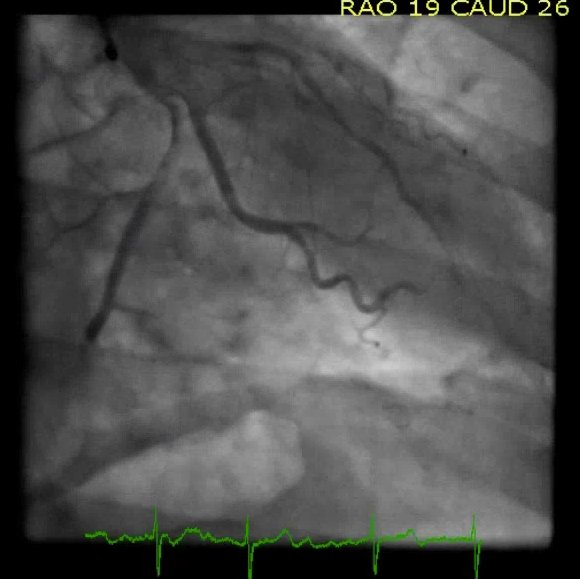
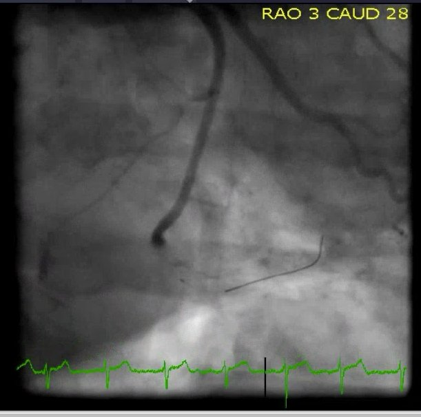
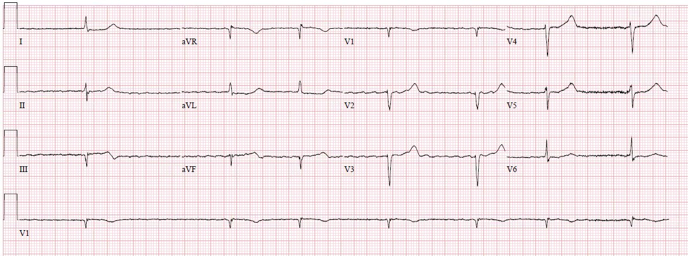
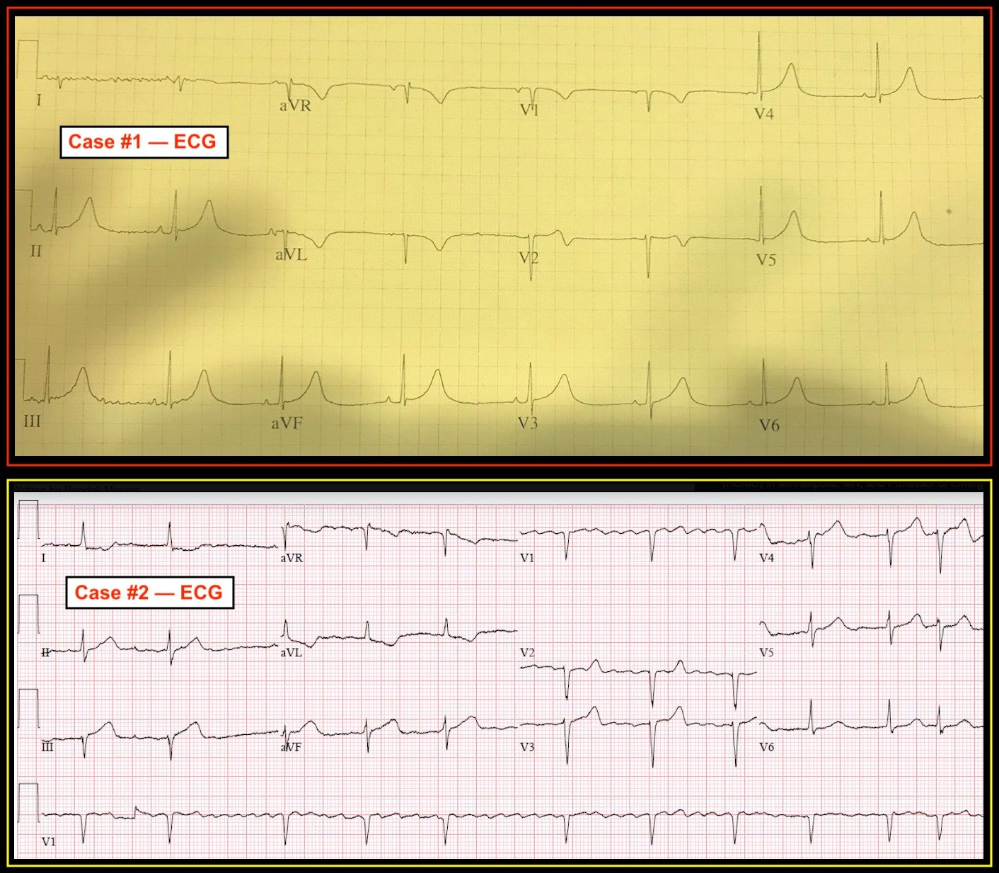

12/11/2018 — Hai ca được nhắn tin cho tôi vì lo ngại sóng T tối cấp thành dưới và sóng T đảo ngược ở aVL – ca nào cần tái tưới máu cấp cứu: một, không ca nào, hay cả hai?
Bản dịch tiếng Việt của bài "Two cases texted to me for concern of inferior hyperacute T waves and a flipped T in aVL – do either, neither, or both need emergent reperfusion?" – Dr. Smith’s ECG Blog. Giữ nguyên toàn bộ 11 hình ảnh của bản gốc.
Tác giả: Pendell Meyers
Gần đây tôi nhận được hai tin nhắn, trong cả hai trường hợp người thầy thuốc đều lo ngại về khả năng có sóng T tối cấp (hyperacute T-waves) ở các chuyển đạo dưới kèm sóng T đảo ngược ở aVL. Tôi không được cung cấp bất kỳ bệnh sử lâm sàng nào.
Bạn sẽ nói gì với nhóm điều trị trong hai ca này?




Câu trả lời của tôi:
Ca 1: “Không phải tối cấp. Sóng T ở aVL nhiều khả năng vốn như vậy trên điện tâm đồ nền, hãy gửi điện tâm đồ nền nếu có. Bệnh cảnh thế nào?”
Ca 2: “Đồng ý là đáng lo ngại cho tổn thương thành dưới-sau. Hình ảnh này gần như có giá trị chẩn đoán hoàn toàn, trừ khi có một điện tâm đồ nền giống hệt. Bệnh cảnh thế nào?”
Bạn có đồng ý với đánh giá của tôi không? Vì sao tôi nói Ca 1 không phải tối cấp còn Ca 2 thì có? Liệu tôi có đúng không?
Ca 1:
Sóng T cao nếu tính theo milimét tuyệt đối, nhưng chúng không đủ “béo” (diện tích dưới ST-T không đủ lớn so với phức bộ QRS). Phức bộ QRS hẹp và âm ở aVL, nghĩa là có thể, thậm chí nhiều khả năng, sóng T nền cũng âm ở chuyển đạo này. Vì vậy khi thấy sóng T âm trong ca này, tôi không nhất thiết phải báo động, vì nó không béo, và có thể đó đơn giản là sóng T nền ở chuyển đạo này của bệnh nhân. Một điện tâm đồ ghi lại sẽ giúp xác nhận nghi ngờ này, tuy nhiên lại không có.
Sau khi tôi đưa ra ý kiến, nhóm điều trị cho biết bệnh nhân là nam giới trung niên đến khoa cấp cứu (ED) vì cơn co giật, có tiền sử rối loạn co giật và đã không dùng thuốc. Bệnh nhân không đau ngực, không khó thở. Troponin âm tính. Bệnh nhân không có hội chứng vành cấp (ACS).
Ca 2:
Rung nhĩ đáp ứng thất chậm. Bệnh nhân này cũng có phức bộ QRS hẹp, bình thường. Trong ca này, trục có hướng khiến QRS dương ở aVL. Chuyển đạo III và aVF có hình thái đoạn ST thẳng đáng ngờ, với diện tích dưới đoạn ST-T lớn so với các phức bộ QRS nhỏ, bình thường. Vì QRS bình thường và dương ở aVL, sóng T âm có thể tích lớn ở chuyển đạo này có giá trị chẩn đoán cao cho thay đổi soi gương (reciprocal change). Điều này được củng cố bởi ST chênh xuống (STD) ở chuyển đạo I, không phù hợp với phức bộ QRS bình thường của chuyển đạo này. Cũng có ST chênh lên (STE) ở chuyển đạo III và aVF, dù việc nó có chính thức đạt 1mm ở cả hai chuyển đạo hay không thì còn đáng bàn và không được đa số những người tôi cho xem điện tâm đồ này đồng thuận. Tôi cũng nghi ngờ có tổn thương thành sau vì hình thái ở chuyển đạo V2, nơi có đoạn ST thẳng, đẳng điện một cách “gượng gạo” từ điểm J đến chỗ khởi đầu đột ngột của sóng T, điều mà theo tôi gợi ý ST chênh xuống tương đối và ST thẳng đuỗn dù không có ST chênh xuống tuyệt đối.
Bước tiếp theo của bạn ở Ca 2 sẽ là so sánh với điện tâm đồ nền, và đây là điện tâm đồ đó:


Một điện tâm đồ ghi lại được thực hiện ngay sau đó:


Các sóng T tối cấp này được nhóm cấp cứu chẩn đoán ngay, và khoa tim mạch được gọi để thông tim cấp cứu. Tuy nhiên, ca này có thể không đạt tiêu chuẩn STEMI chính thức vì có thể không có đủ một milimét ST chênh lên ở chuyển đạo aVF, tùy vào đường nền chính xác. Nó rất sát ngưỡng, nếu không muốn nói là đã đạt chẩn đoán. Các bác sĩ tim mạch cho rằng nó không đạt tiêu chuẩn ACC/AHA của chúng tôi, và vì vậy thông tim cấp cứu bị hủy.
Troponin T lần đầu không phát hiện được. Troponin lần thứ hai là 0,01 ng/mL. Lần thứ ba là 0,02 ng/mL. Troponin lần thứ tư tăng vọt lên 0,61 ng/mL, sau đó không đo troponin thêm nữa.
Bệnh nhân được thông tim muộn khoảng ~28 giờ sau đó, phát hiện tắc 100% LCx đoạn giữa-xa (TIMI 0). Đã thực hiện PCI với kết quả chụp mạch tốt.






Đây là điện tâm đồ sau can thiệp của bệnh nhân:


Vì việc đo troponin dừng lại khoảng 9 giờ sau khi nhập viện, chúng tôi không biết nồng độ troponin đỉnh. Siêu âm tim có rối loạn vận động thành (WMA) dưới-sau, với EF 45% vào thời điểm đó (không có siêu âm tim cũ để so sánh).
Những điểm cần học:
Sóng T tối cấp có thể nhận ra được nhờ kinh nghiệm, và trong mắt chuyên gia điện tâm đồ có kinh nghiệm, chúng là những sóng T béo, đối xứng, có thể tích lớn khi đánh giá so với kích thước và hình thái của phức bộ QRS đi trước.
Về lý thuyết, bệnh nhân nhồi máu cơ tim do tắc (Occlusion MI) sẽ được hưởng lợi về tử vong nhiều hơn khi được tái tưới máu ở giai đoạn sóng T tối cấp của OMI so với giai đoạn ST chênh lên. Vì mô hình hiện nay không đưa ra khuyến cáo hay đào tạo nào về sóng T tối cấp, bạn phải tự chủ động học điều này nếu muốn mang lại lợi ích ấy cho bệnh nhân của mình.
Khi bắt đầu tự định hướng để phân biệt sóng T bình thường với sóng T tối cấp trong thực hành, dễ hiểu là bạn sẽ phải trải qua một giai đoạn hiệu chuẩn, trong đó bạn thấy nhiều biến thể bình thường trông đáng báo động trước khi đủ kinh nghiệm để phân biệt chúng với sóng T tối cấp dương tính thật. Giống như mọi quá trình khác trong y khoa không thể đạt được chỉ bằng việc đọc một bảng do ACC/AHA soạn ra, việc này cần thời gian và công sức. Có thể đoán trước rằng bạn và những người học mà bạn dạy sẽ trải qua một giai đoạn độ đặc hiệu giảm (nhiều dương tính giả) trước khi đạt đến trình độ thành thạo, và giai đoạn tạm thời này không nên làm bạn nản lòng việc học sâu hơn!

———————————————————–
Bình luận của KEN GRAUER, MD (12/11/2018):
———————————————————–
Tôi RẤT THÍCH bài viết này của Dr. Pendell Meyers về việc so sánh 2 điện tâm đồ được nhắn tin cho anh ấy vì lo ngại có thể có sóng T tối cấp thành dưới kèm thay đổi soi gương ở chuyển đạo aVL. Tôi đã đưa ra nhận định về 2 bản ghi này trước khi biết bệnh sử của từng bệnh nhân — và trước khi đọc phần diễn giải của Dr. Meyers. Mặc dù tôi đã độc lập đi đến cùng kết luận như Dr. Meyers — con đường dẫn tôi đến kết luận này mang lại một góc nhìn khác.
- Để tiện so sánh — tôi đã đặt lại cả hai bản ghi ban đầu trong Hình 1.
==========================
Ca #1:
- Ban đầu tôi đã rất lo ngại ở Ca #1 về hình dạng sóng T ở các chuyển đạo dưới. Dù đỉnh sóng T không quá “béo” — biên độ sóng T ở mỗi chuyển đạo dưới rõ ràng cao-hơn-mức-đáng-có so với chiều cao của QRS ở các chuyển đạo này. Ủng hộ khả năng có thay đổi cấp tính, sóng T đảo ngược sâu ở chuyển đạo aVL quả thực là “hình soi gương” của các sóng T thành dưới cao-hơn-dự-kiến. Càng làm tôi lo ngại ban đầu là sóng T hai pha ở chuyển đạo V2 …
Dù vậy — lý do khiến tôi nghi ngờ hình ảnh chúng ta thấy ở Ca #1 là có lẽ không cấp tính là sự kết hợp của các yếu tố sau:
- Các sóng ST-T ở chuyển đạo V3, V4, V5 và V6 trông gần như giống hệt các sóng ST-T ở chuyển đạo II, III và aVF. Như vậy có không dưới 7 trên 12 chuyển đạo mang hình ảnh gần như giống hệt nhau — và điều đó rất không đặc trưng cho nhồi máu cơ tim cấp. Đó là vì nhồi máu cơ tim cấp thường khu trú ở một hoặc hai vùng nhóm chuyển đạo. Ngược lại — các biến thể tái cực và các bất thường điện tâm đồ do yếu tố chuyển hóa có nhiều khả năng lan tỏa hơn hẳn.
- Thực sự không có ST chênh lên trên điện tâm đồ của Ca #1.
- Sóng T đảo ngược khá sâu, đối xứng ở chuyển đạo aVL không nhất thiết là bất thường. Trục sóng T thường đi khá sát theo trục QRS — vì vậy bản thân sóng T đảo ngược ở chuyển đạo aVL có thể được thấy một cách bình thường khi phức bộ QRS chủ yếu âm (như ở Ca #1). Và, nếu hóa ra nhiều sóng T nổi bật ở Ca #1 không phải do thiếu máu cục bộ cấp — thì độ sâu của sóng T đảo ngược ở chuyển đạo aVL không vượt quá mức tương xứng với những gì có thể dự kiến ở một biến thể tái cực khi QRS âm hoàn toàn ở chuyển đạo aVL.
- Sóng T đảo ngược khá sâu ở chuyển đạo V1 cũng không nhất thiết là bất thường — nhất là khi sóng T cao ở 7/12 chuyển đạo.
- Dù trông đáng lo ngại — sóng T hai pha ở chuyển đạo V2 có thể chỉ đơn giản là một “sóng T chuyển tiếp” giữa sóng T đảo ngược sâu ở V1 và sóng T cao đến bất ngờ ở chuyển đạo V3.
- LƯU Ý — Dù thời gian khoảng QT trông dài (tức là, tôi đo được QT ít nhất là 480 ms) — nhịp chậm đáng kể với tần số tim dưới 50/phút khiến khó biết khoảng QT hơi dài này có thể mang ý nghĩa gì (nếu có).
- ĐIỀU CỐT LÕI cho Ca #1 — Tôi đã không chắc chắn rằng điện tâm đồ ban đầu ở Ca #1 không phải cấp tính — NHƯNG — tính chất lan tỏa của các sóng T trông gần như giống hệt nhau ở 7 trên 12 chuyển đạo, cùng với một lý giải rõ ràng có thể là lành tính cho các dấu hiệu ở chuyển đạo aVL, V1 và V2 — khiến tôi nghi ngờ các dấu hiệu trên điện tâm đồ #1 có lẽ không cấp tính. Giống như Dr. Meyers — tôi muốn biết bệnh sử. Ngay khi biết bệnh nhân này có tiền sử co giật, và không hề có đau ngực cấp — tôi trở nên tự tin hơn nhiều rằng đây không phải là một bản ghi cấp tính.


==========================
Ca #2:
- Nhịp của điện tâm đồ ban đầu ở Ca #2 là AFib chậm. Có một ít nhiễu đường nền làm biến dạng các sóng ST-T, và giải thích cho sự khác biệt nhỏ về hình dạng của một số sóng ST-T này giữa các nhát liên tiếp trong cùng một chuyển đạo. Dù vậy — NẾU điện tâm đồ này được ghi từ một bệnh nhân có triệu chứng cấp mới xuất hiện — thì nó gần như có giá trị chẩn đoán cho OMI cấp ( = nhồi máu cơ tim do tắc — Occlusion-based Myocardial Infarction).
- Dr. Meyers đã tinh tường chỉ ra vấn đề của mô hình hiện nay trong việc đánh giá các bản ghi cấp tính. Việc có đạt 1 mm ST chênh lên ở ≥2 chuyển đạo lân cận hay không lẽ ra phải không liên quan đến việc quyết định đâu là chăm sóc tối ưu cho bệnh nhân ở Ca #2. Đơn giản là KHÔNG THỂ NÀO việc ST thẳng đuỗn + ST chênh lên ở điểm J nhẹ-nhưng-có-thật + sóng T “phình to” ở đỉnh tại chuyển đạo III và aVF lại là bình thường.
- Trong bối cảnh các thay đổi này ở chuyển đạo III và aVF — đỉnh sóng T béo-hơn-dự-kiến ở chuyển đạo II cũng phù hợp với thay đổi cấp tính.
- Giống như Dr. Meyers — các chuyển đạo aVL, V2 và V3 nên được dùng để xác nhận chẩn đoán OMI nếu bệnh nhân này đang có đau ngực mới xuất hiện, cho đến khi có thể chứng minh điều ngược lại trên thông tim cấp cứu. Với sóng R có chiều cao khiêm tốn ở chuyển đạo aVL — một hình ảnh kinh điển của thay đổi soi gương dạng ảnh phản chiếu quả thực được thấy ở sóng ST-T tại aVL (bao gồm cả điểm J chênh xuống nhẹ-nhưng-có-thật, là hình soi gương ngược lại của ST chênh lên nhẹ ở điểm J tại chuyển đạo III và aVF). Hình dạng của sóng T ở chuyển đạo V2 và V3, xuất hiện sau đoạn ST đi trước tương đối thẳng đuỗn, nổi bật một cách “chướng mắt” — và gợi ý mạnh các thay đổi cấp tính ở thành sau (như thường thấy đi kèm với OMI thành dưới cấp).
==========================
SUY NGHĨ CUỐI CÙNG — Hãy nhìn lại lần cuối 2 bản ghi trong Hình 1. Chẳng phải thật đáng chú ý ở Ca #1 khi các sóng ST-T giống nhau đến thế ở 7 trên 12 chuyển đạo sao?
- Khi các sóng T dương nổi-bật-hơn-dự-kiến ở nhiều chuyển đạo mà không khu trú, do một nguyên nhân không do thiếu máu cục bộ — bạn thường sẽ thấy sóng T đảo ngược sâu nổi bật không do thiếu máu cục bộ ở một vài chuyển đạo còn lại (như chúng ta thấy ở đây) — và, đôi khi bạn thậm chí sẽ thấy một sóng T hai pha “chuyển tiếp” không do thiếu máu cục bộ (như chúng ta thấy ở đây tại chuyển đạo V2 của Ca #1).
- Ngược lại — hãy lưu ý sự khu trú của các sóng ST-T tối cấp ở các chuyển đạo dưới trong Ca #2 — với các thay đổi soi gương khu trú ở chuyển đạo I và aVL như dự kiến với OMI thành dưới — cùng các bất thường sóng ST-T gợi ý OMI thành sau đi kèm, khu trú (như dự kiến) ở chuyển đạo V2,V3. Đó là LÝ DO tôi nghi ngờ điện tâm đồ của Ca #1 có lẽ không cấp tính — nhưng điện tâm đồ của Ca #2 gần như có giá trị chẩn đoán OMI cấp bất chấp quyết định ban đầu của khoa tim mạch là hủy thông tim ngay lập tức.